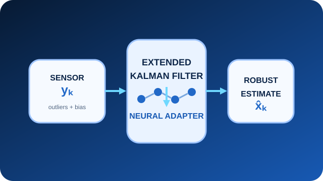

Ongoing research
Deep Learning for Robust Kalman Filtering
A learning-augmented Extended Kalman Filter designed to improve robustness against outliers, sensor bias, and imperfectly known noise statistics. The project combines model-based prediction with learned adaptation and compares performance against classical EKF and learning-based filtering frameworks on corrupted sequential data.
PyTorchKalman filteringTime seriesCode forthcoming